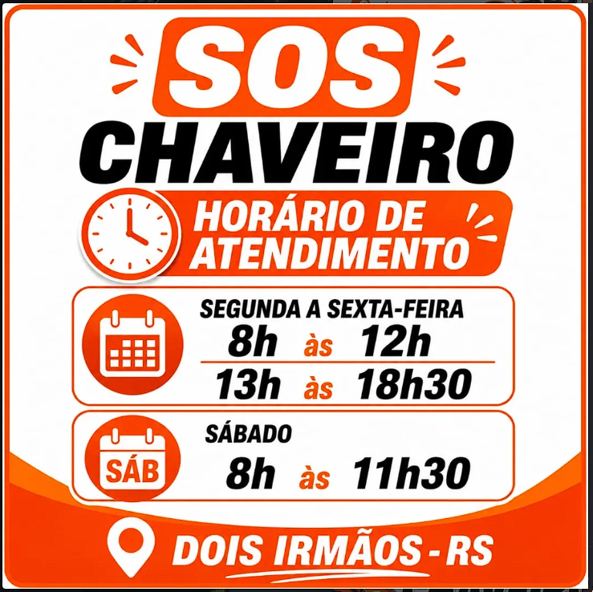

Atendimento 24 horas
Emergências a qualquer hora do dia ou da noite, em Rio do Sul e região. Perdeu a chave? A gente resolve.
Perdeu a chave ou trancou-se fora de casa? Atendemos emergências de abertura de portas, cópia e conserto de chaves em Rio do Sul e região, a qualquer hora.
Serviços: chaves codificadas, conserto de chaves, troca de carcaça e chaves presenciais para diversas marcas e modelos de veículos. Atendimento à domicílio.
Soluções completas de chaveiro para residências, comércios e veículos, com agilidade e confiança.
Emergências a qualquer hora do dia ou da noite, em Rio do Sul e região. Perdeu a chave? A gente resolve.
Cópia e programação de chaves codificadas para diversas marcas e modelos de veículos.
Reparo de chaves danificadas, quebradas ou desgastadas pelo uso.
Substituição de carcaça de chaves e controles, preservando o funcionamento.
Abertura de portas residenciais, comerciais e automotivas sem danos.
Chaves presenciais para diversas marcas e modelos, com atendimento especializado.
Atendimento rápido, especializado e disponível 24 horas em Rio do Sul e região.
Solicitar atendimento agoraO Chaveiro Em Dois Irmãos atua em Rio do Sul e região com atendimento especializado em chaves e fechaduras, disponível 24 horas por dia.
O serviço cobre chaves codificadas, conserto de chaves, troca de carcaça e chaves presenciais para diversas marcas e modelos, com atendimento à domicílio.
Atendimento contínuo para emergências de chaveiro.

Chame pelo WhatsApp ou acompanhe os serviços pelo Instagram. Atendemos Rio do Sul e região.
Sim. O atendimento é 24 horas, incluindo emergências de abertura de portas e chaves codificadas em Rio do Sul e região.
Sim. Trabalhamos com chaves codificadas e chaves presenciais para diversas marcas e modelos de veículos.
Atendemos Rio do Sul e região, com serviço à domicílio.
É só chamar pelo WhatsApp ou pelo Instagram @chaveiroemdois e informar o serviço e o endereço.